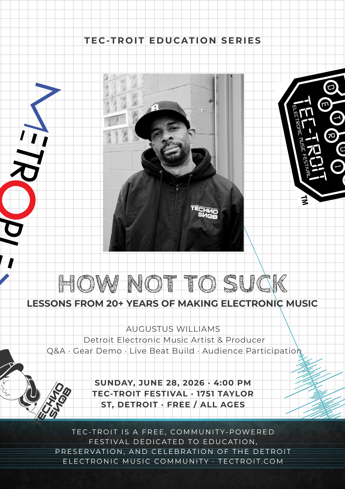

Sun, June 28, 2026 · 4:00 PM
How Not To Suck
Tec-Troit Festival · 1751 Taylor St, Detroit
Education Series workshop with Augustus Williams. Lessons from 20+ years of making electronic music, featuring Q&A, gear demo, live beat build, and audience participation.